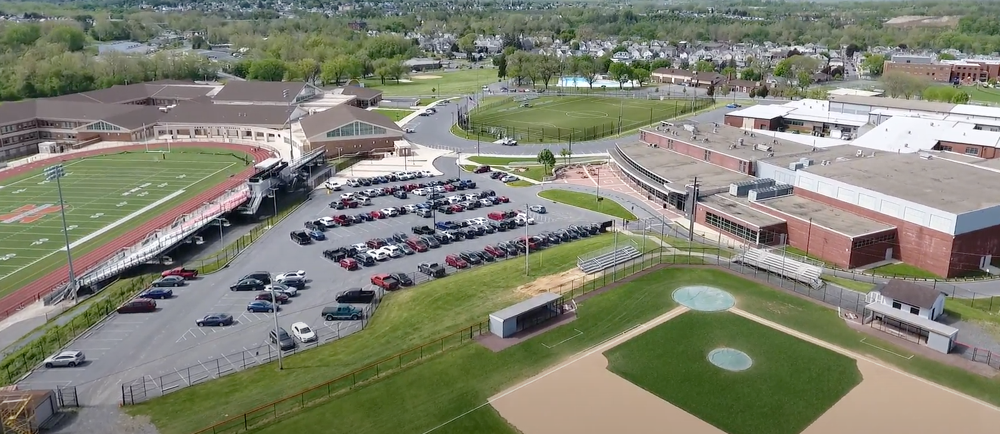

Northampton: A Model District
Northampton Public Schools, the home of the "Freshampton" nutrition program, became a showcase for what LFS funds could accomplish. Their team built relationships with local food hubs and farmers to feature local apples, lettuce, squash, potatoes, and carrots on school menus. A kale Caesar salad taste test won over students who "did not think they would like it." Northampton won the 2026 statewide Terrific Tray of the Year award for its commitment to locally sourced, universally free school meals.